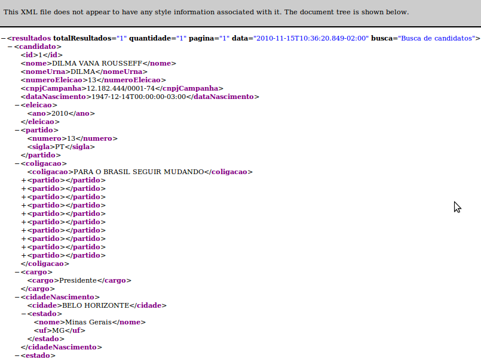
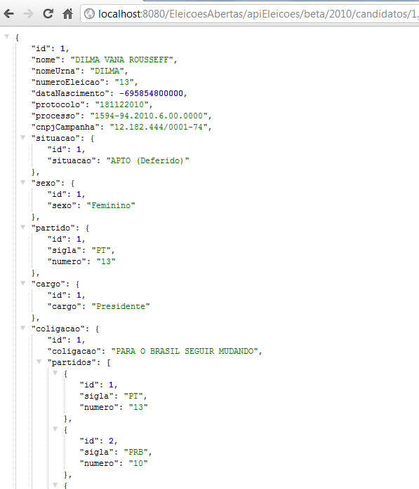

Sabendo mais sobre os seus candidatos
As informações no site do Tribunal Superior Eleitoral - TSE sobre os candidatos são bastante completas e acessíveis. No entanto, se você quiser acessar dados de seu candidato de forma programável, deverá ler os CSV's dos candidatos ou fazer scrapping da página.
Se você é desenvolvedor Java e gostaria de contribuir acesse o código da aplicação.
Explore Toda a API com essa aplicação.
Candidatos como serviço!
Nosso objetivo é apresentar dados dos candidatos como serviços WEB REST. Assim fica mais fácil de criar aplicações com dados de seus candidatos.
Algumas considerações:
- Todos resultado são paginados e a paginação é feita pela parâmetro "pagina".
- O método HTTP de acesso é sempre GET
As URIs
Considerando a URL base http://williamprogrammer.com/EleicoesAbertas/apiEleicoes/beta/2010/, temos as seguintes URIs para acesso aos dados dos candidatos
| URI | Descrição | Parâmetros aceitos |
|---|---|---|
| /candidatos | Retorna todos os candidatos | pagina: recebe um número inteiro indicando a página que você está acessando |
| /candidatos/busca | Busca candidatos de acordo com nome | pagina: conforme já descrito nome: O nome ou parte do nome para busca(usaremos um simples LIKE para realizar a busca). Esse parâmetro é obrigatório para a busca partido: O partido do candidato conforme retorno da URI /partido cargo: Um cargo conforme retorno de /cargo resultadoEleicao: O resultado da eleição conforme retorno da URI /resultadoEleicao |
| /candidatos/eleitos | Retorna todos os candidatos eleitos | pagina |
| /candidatos/{id} | Retorna um único candidato onde {id} é o Id do candidato | - |
| /candidatos/{estado} | Retorna os candidatos de um determinado estado onde {estado} é a sigla do estado (sempre em maiusculo). | pagina |
| /candidatos/{estado}/eleitos | Como em /candidatos/{estado}, no entanto, retorna só os candidatos eleitos | pagina |
| /candidatos/{estado}/{cargo} | Traz os candidatos dado o {estado} e o {cargo} | pagina |
| /candidatos/{estado}/{cargo}/eleitos | Traz os candidatos eleitos dado o {estado} e o {cargo} | pagina |
| /candidatos/{estado}/{cargo}/{partido} | Traz os candidatos dado o {estado}, {cargo} e o {partido}, sendo que partido corresponde a sigla do mesmo | pagina |
| /candidatos/{estado}/{cargo}/{partido}/eleitos | Mesma situação descrita para a URI /candidatos/{estado}/{cargo}/{partido}/, mas traz somente os eleitos | pagina |
| /cargo | Todos os cargos | pagina |
| /partido | Todos os partidos | pagina |
| /coligacao | Todos as coligações | pagina |
| /situacao | Todos as situações | pagina |
| /resultadoEleicao | Todos os resultados possíveis para a eleição | pagina |
| /ocupacao | Todos os ocupações dos candidatos | pagina |
Tipo de retorno
Os resultados são apresentados no formato XML e JSON. Você pode adicionar .json em cada URL para ter o formato JSON ou configurar o header Accepts da sua requisição para application/json Um exemplo de retorno XML para um candidato é mostrado na imagem abaixo:
Imagem de um exemplo do XML retornado pelo serviço de busca
Imagem de um exemplo do JSON retornado
Aplicativos
Em breve...
Contato
Se tiver alguma dúvida, sugestão ou gostaria de mostrar sua aplicação, mande um e-mail para servicosEleicoes@williamprogrammer.com